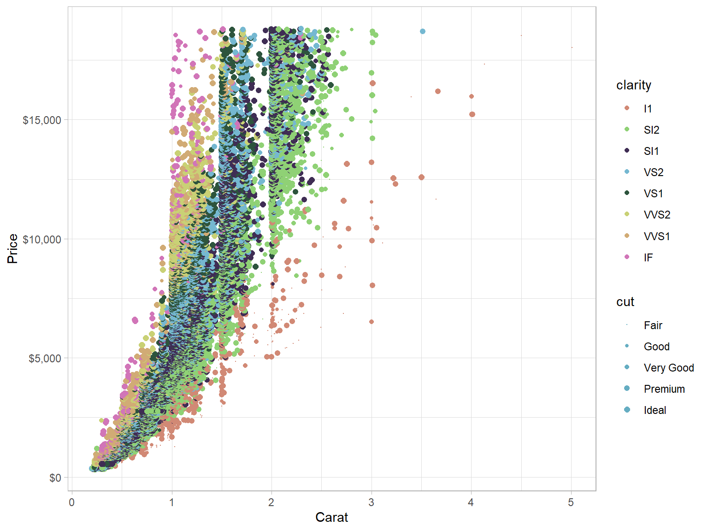

Have you ever wondered how diamonds are priced beyond the number of carats(or weight)? Price also depends on the diamond’s cut, color, and clarity.
Here is a summary of the “diamonds” dataset found in the ggplot2 R package. As you can see, the factors were measured in over 50,000 diamonds
## tibble [53,940 x 5] (S3: tbl_df/tbl/data.frame)
## $ carat : num [1:53940] 0.23 0.21 0.23 0.29 0.31 0.24 0.24 0.26 0.22 0.23 ...
## $ cut : Ord.factor w/ 5 levels "Fair"<"Good"<..: 5 4 2 4 2 3 3 3 1 3 ...
## $ color : Ord.factor w/ 7 levels "D"<"E"<"F"<"G"<..: 2 2 2 6 7 7 6 5 2 5 ...
## $ clarity: Ord.factor w/ 8 levels "I1"<"SI2"<"SI1"<..: 2 3 5 4 2 6 7 3 4 5 ...
## $ price : int [1:53940] 326 326 327 334 335 336 336 337 337 338 ...In data analysis more than anything, a picture really is worth a thousand words.

The app builds off this and utilizes a linear regression model to predict the price of a diamond given its features. You can pick and choose what features to give the model and the app will provide the predicted price of your diamond.